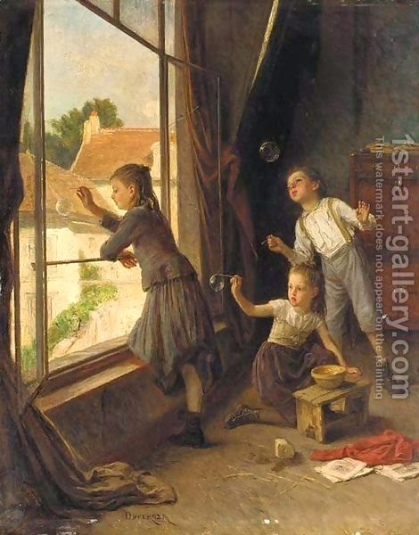

Rosh Hashanah 33 - What notes to blow on the shofar
The order of the shofar sounds is as follows : first the opening long note (called tekiah), then three sets of three shortest notes possible (called teruah), and then another long note (tekiah).
There is also another note, a whimpering sound, called "shevarim." Three shevarim equal in length to a long sound, tekiah, and three groups for three short notes (teruah) also equal the in length to the long sound. Others reverse the understanding of the broken notes, "shevarim" and "teruah." Their disagreement is about which human emotion is this more similar to, moaning or sobbing.
If one played a long note, tekiah, two times longer than it should be - he has not gained anything, since a note without interruption is still the same long note, so it is considered as if the played just one note. For example, if he played tekiah - teruah - tekiah, and made the last note two times longer than the first, it is still not considered as if the played the last note in the first group and then started the second long note in the would-be second group.
Art: Blowing bubbles By Theophile Emmanuel Duverger